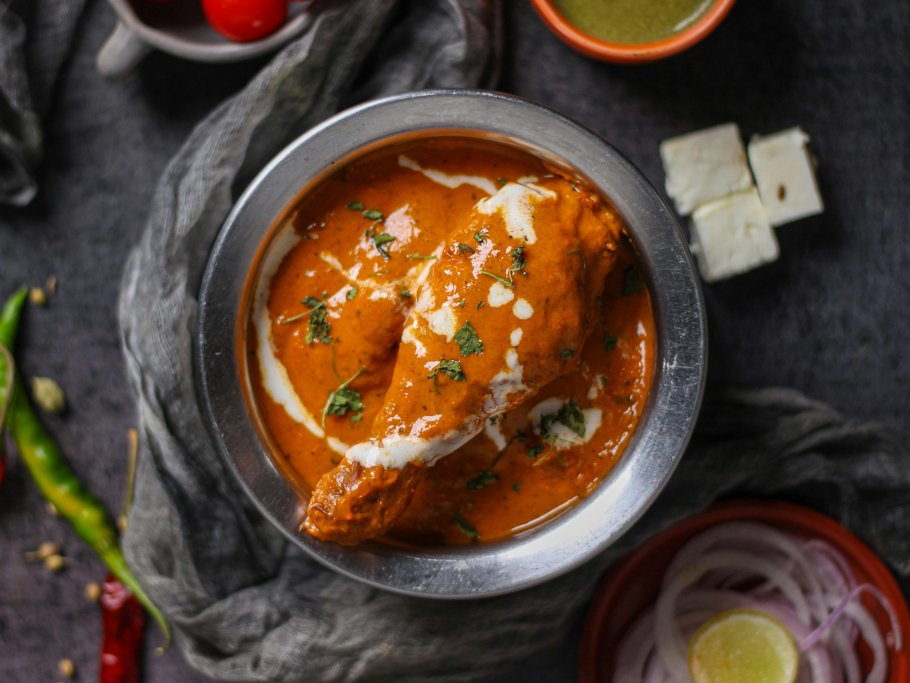

The Best Butter Chicken

Why this recipe is a must make!
Butter chicken may not be a authentic dish, but even as desi person I can not deny how tasty butter chicken is.
And this recipe is the closest you can get to resturant level quality at home.
What you will need:
Chicken Marinade
- 800g chicken thigh, cut into bite sized pieces
- 200g plain full fat yoghurt
- 4 cloves garlic
- 2 tsps lemon juice
- knob of ginger
- 2 green chillies
- 1 tsp turmeric
- 1 tsp garam masala
- 1 tsp ground cumin
- 1 tsp red chilli powder
- 1 tsp salt
Curry
- 3 tbsps ghee (or 1 tbsp buteer with 2 tbps oil)
- 1 large onion diced (any type is fine)
- 1 tsp turmeric
- 1 tsp garam masala
- 1 tsp ground cumin
- 1 tsp red chilli powder
- 1 tsp salt
- 2 cloves garlic
- knob of ginger
- 4 roma tomatoes cut into quarters
- 1/4 cup heavy cream
How to make this restuant quality dish:
- Combine yogurt and spices with chicken pieces
- Let chicken marinade while to prep the curry
- In a pan on medium heat add oil and onions
- After letting onions cook for 10 minutes with occasional stirring add spices
- After about a minute add the garlic, ginger, and diced tomato
- After around 10 minutes with occasional stirring, turn heat to low cover pan
- After 10 minutes covered blend sauce until smooth
- Cook chicken in pan until fully cook
- Add chicken and heavy cream to blended curry
- Enjoy this amamzing and delicouse butter chicken with either rice or naan bread